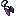
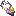
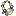

aruori6
整合包图鉴
简单
精确
#eternal_starlight:accessories
物品标签 · 6 个已收录成员
标签成员
(6)

战斧挂件
eternal_starlight:battleaxe_pendant
战锤挂饰
eternal_starlight:warhammer_pendant
蝶翼护符
eternal_starlight:butterfly_wings_amulet

真菌护符
eternal_starlight:fungus_amulet

珍珠项链
eternal_starlight:pearl_necklace
新月吊坠
eternal_starlight:crescent_pendant
使用该标签的配方
无